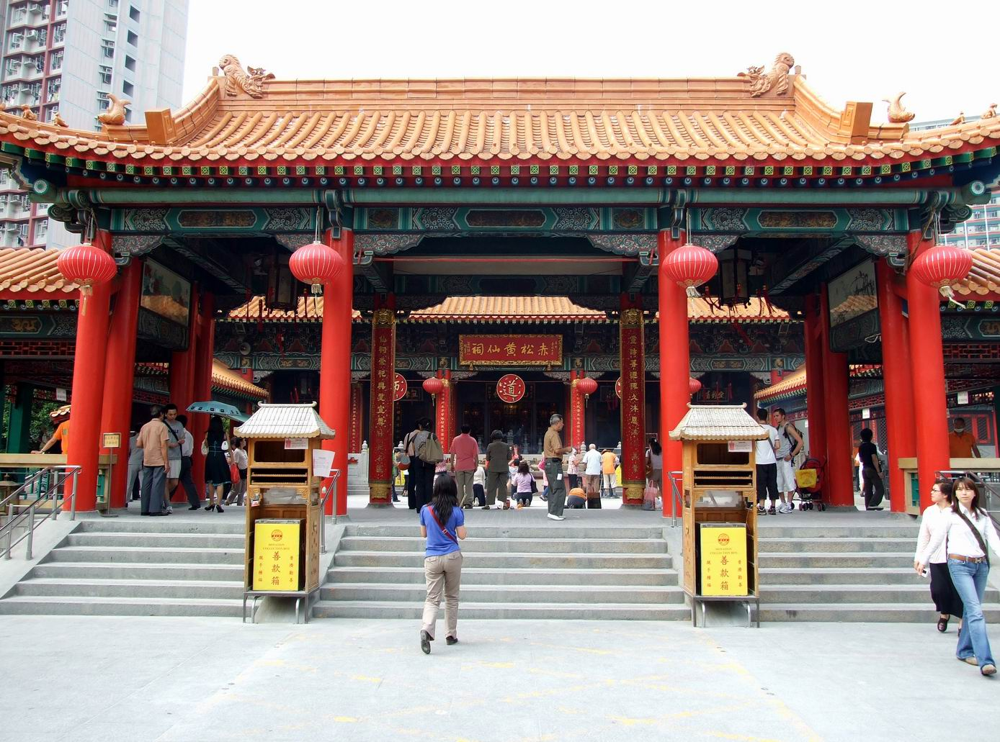

Hong Kong x India
12 · Package 03
Package 03
Culture + Harbour · 6D / 5N
A richer itinerary for repeat travellers, senior-friendly families and couples who want more than theme parks.

Best forCulture
PaceLayered
PriceQUOTE LIVE
Day 1
Arrival · harbour orientation · Avenue of Stars
Day 2
The Peak · Star Ferry · Central heritage walk
Day 3
Wong Tai Sin Temple · West Kowloon Cultural District
Day 4
Ngong Ping 360 · Big Buddha · Lantau landscapes
Day 5
Tramways · local markets · Temple Street night
Day 6
Shopping buffer · airport transfer